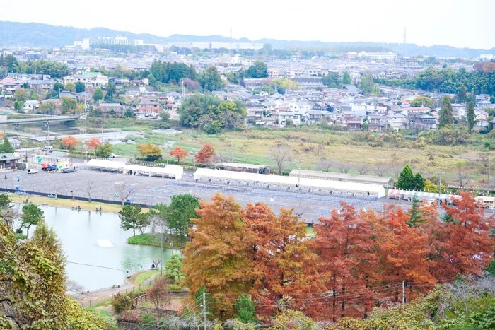
01
秋開催
澄んだ空気と紅葉の季節に楽しむ、珍しい秋の花火大会。
Tokyo Akigawa Autumn Fireworks
紅葉に染まる山々と穏やかな秋川を背景に、音楽と花火が重なる東京最大級の秋花火。
開催まで あと — 日
花火打ち上げ 18:00〜18:50／約5,000発（3か所同時打ち上げ）。会場は東京サマーランド第2駐車場。最新情報を受け取る →
第8回は 2026年11月14日（土）開催決定！
チケット販売開始・プログラム詳細など、公開され次第いち早くお届けします。
秋川流域花火大会は、かつて地域で親しまれていた花火大会の灯を受け継ぎ、あきる野の秋の風情とともに育ってきた地域一体のイベントです。
観覧席、協賛、周辺観光、メディア情報まで、来場前から余韻まで楽しめる情報をひとつのサイトにまとめてお届けしています。

澄んだ空気と紅葉の季節に楽しむ、珍しい秋の花火大会。
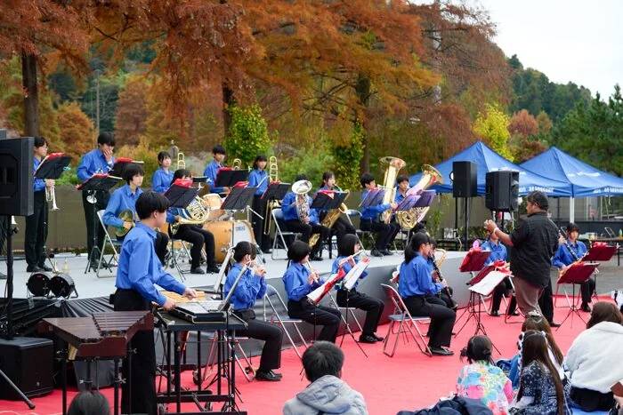
打ち上げのリズムと音楽を重ね、会場全体に一体感を生みます。
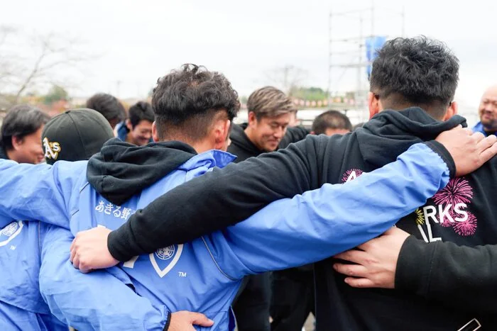
非営利の運営と協賛により、地域の魅力を次世代へつなぎます。
夏の花火大会の喧騒や渋滞に疲れた方へ。秋川流域花火大会は、ゆったりと、安心して楽しめる "余白のある" 花火大会です。
都内の花火大会では珍しく、観覧チケットをお持ちの方は無料駐車場をご利用いただけます。電車の混雑が苦手な方も安心。
都心の人気花火大会と違い、会場周辺の渋滞は軽微。ストレスフリーな来場体験で、家路もスムーズに帰れます。
新宿駅から電車で約60分、車でも約60分。"近場で非日常"を叶える、東京とは思えない秋の絶景が広がります。
会場は広々とした芝生エリア。混雑が少なく、お子様向けの料金設定もご用意。落ち着いて家族の時間を過ごせる秋の夜です。
紅葉に染まる山々を背景に、約5,000発の音楽花火。夏の花火とは違う、しっとりと心に沁みる秋ならではの演出。
2026年で迎える次回開催
地域に根付いた秋の風物詩
毎年打ち上げる音楽花火
都内最大級（自社調べ）
地域・全国の協賛企業
共創で支える花火大会
TVニュース・新聞・WEBで紹介
TBS Nスタ／ウォーカープラス 他
顧客満足度
第7回 来場者アンケート集計中
「また来たい」回答比率
第7回 来場者アンケート集計中
花火だけで終わらない、来場前から楽しめるプログラムを用意しています。 音楽演出、ステージパフォーマンス、屋台、体験ブースが一つの会場に集まります。
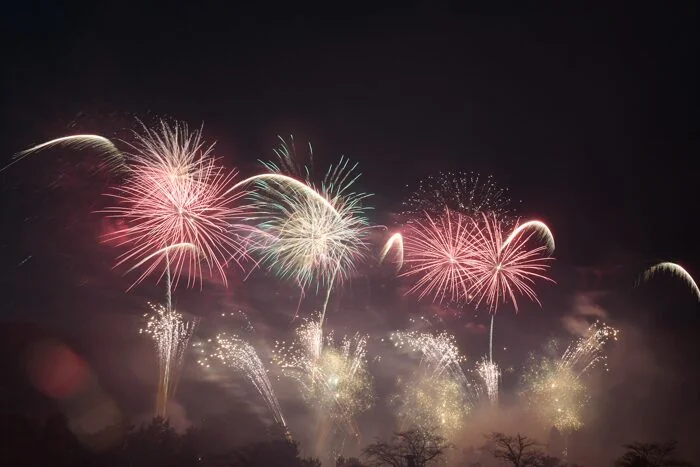
オープニングパートは米津玄師「IRIS OUT」（映画『チェンソーマン 劇場版』主題歌）で幕開け。 メインは映画生誕130周年企画として、世代を超えて親しまれる映画音楽を中心に構成します。
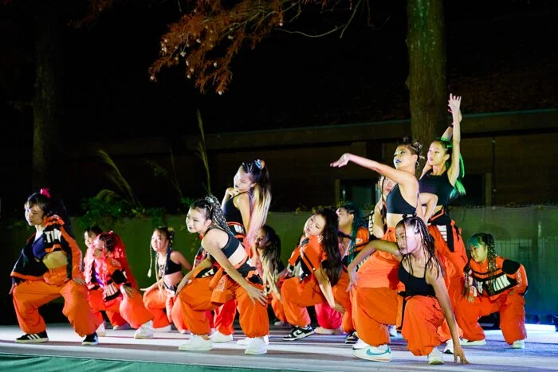
地域のダンスチームによるステージパフォーマンスで、打ち上げ前の時間を盛り上げます。
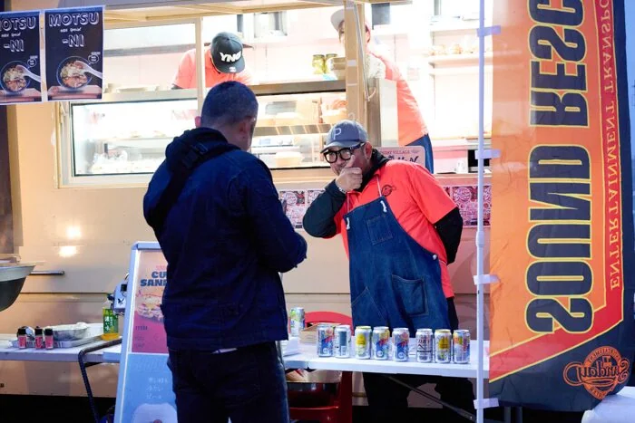
おでん、イカ焼き、オムそば、チュロスなど、秋の夜長にあわせたグルメが集合します。
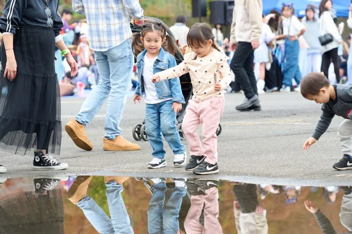
巨大遊具「青春号ふわふわドーム」やボルダリング体験など、ファミリーで楽しめる体験コーナー。
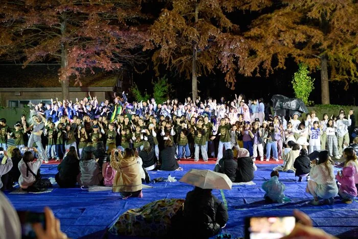
地域に根ざした取り組みを身近に感じられる、消防団による体験ブースを設置します。
来場前のお手洗いやお食事、ステージ・花火打ち上げまでの流れの目安です。
キッチンカーや屋台が順次オープン。場内で食事をご用意ください。
地域のダンス、ふわふわドーム、ボルダリング、消防団体験などお楽しみください。
音楽と花火が重なる、東京最大級の秋花火。約5,000発を打ち上げます。
会場から秋川駅までの無料シャトルバスをご用意しています。
お忘れ物のないよう、お気をつけてお帰りください。
ゆったり観覧できるSS席、指定席のA席、気軽に楽しめるフリーエリアなど、 来場スタイルに合わせたチケットを用意しています。
第8回（2026年11月14日 土曜）開催決定！ チケット販売開始日は決定次第ご案内します。最新情報は こちら から受け取れます。
本大会は有志による非営利の活動として運営されています。 原材料高騰などの影響を受けながらも、皆さまの寄付と協賛が開催を支えています。
前回大会は3,000人を超える来場者で賑わい、有料席は完売席種が続出しました。 積み重ねてきた一つひとつの体験が、第7回への礎となっています。
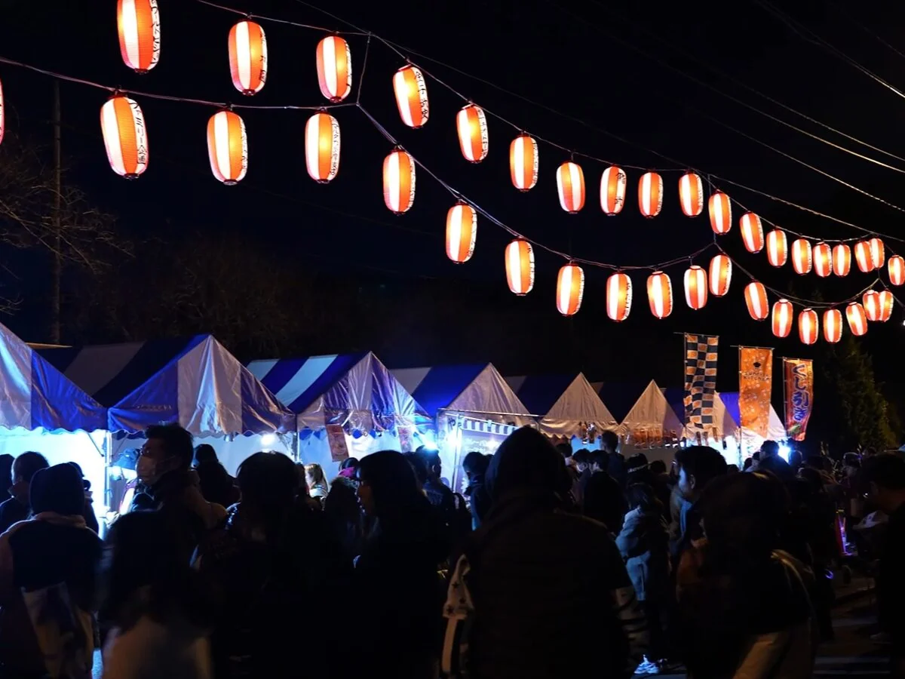
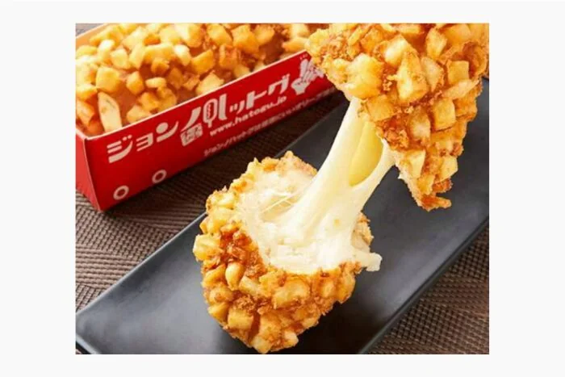
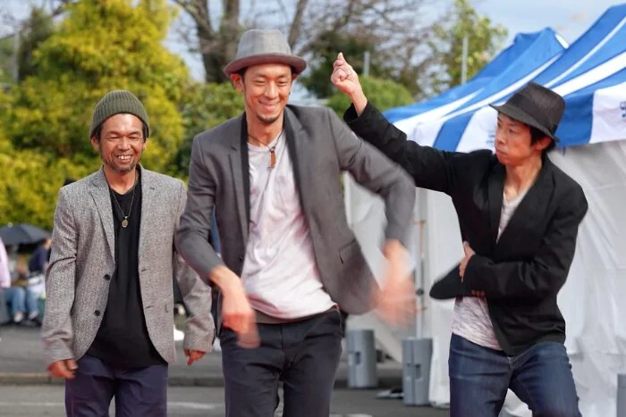
会場で過ごした時間が、どんな記憶になったのか。実際に観覧された方の感想をご紹介します。
紅葉と花火の組み合わせが本当に美しくて、夏とは違う特別な気持ちになりました。子どもも音楽花火に夢中で、家族の思い出になりました。
都内から1時間とは思えない景色で、夏の花火大会のような混雑もなく、ゆったり観られたのが最高でした。落ち着いた秋の夜を満喫できました。
SS席を利用しました。テントもストーブも完備で、4人でゆっくり食事しながら花火を観られて贅沢でした。来年もまた来たいと思います。
東京サマーランド第2駐車場を会場に、秋川を背にして開催されます。
本大会は全エリア有料観覧制です。安全に楽しんでいただくため、事前にご確認ください。
会場での当日券販売はございません。チケットはすべて事前購入制となりますので、各販売プラットフォームよりお買い求めください。
飲食物・アルコール類・大型のブルーシート等の持ち込みはご遠慮いただいております。会場内の屋台・キッチンカーをご利用ください。
原則、雨天決行です。ただし強風・大雨・河川増水など、安全確保が困難と判断した場合は中止となることがあります。最新情報は本サイトおよび公式SNSにてご案内いたします。
駐車場はチケットをお持ちの方のみご利用いただけます。チケットをお持ちでない方の会場周辺へのご来場はお控えください。
各種ウェブプレイガイド、ふるさと納税サイト、楽天トラベルなど、複数のプラットフォームで取り扱っています。詳細はチケットセクションをご覧ください。
本大会は、地域の企業・団体・個人の皆さまのご協賛により開催されています。心より御礼申し上げます。
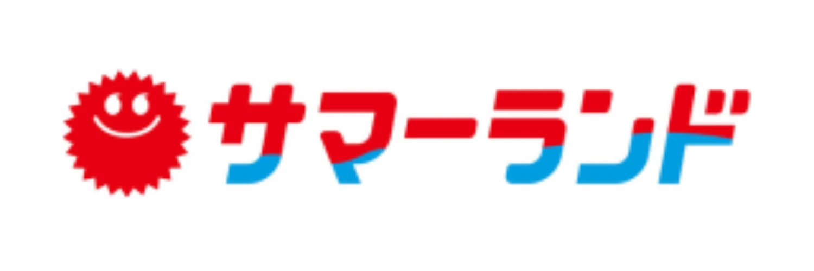
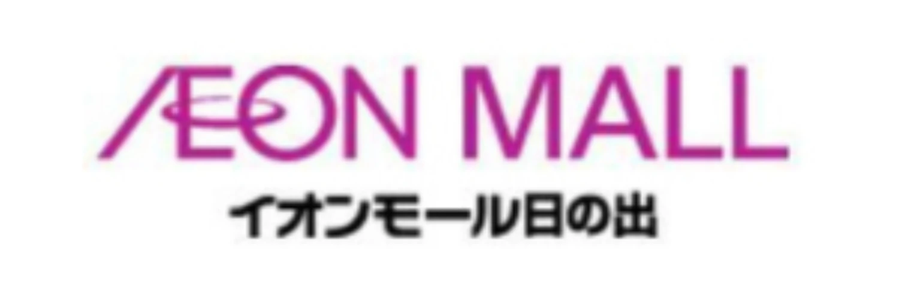
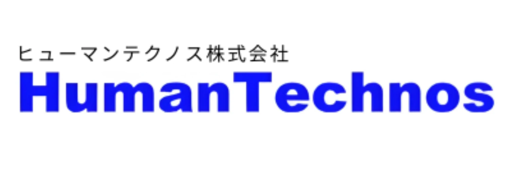
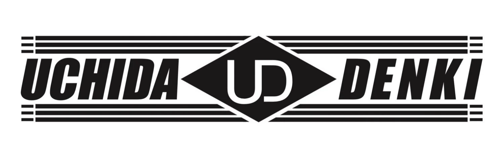
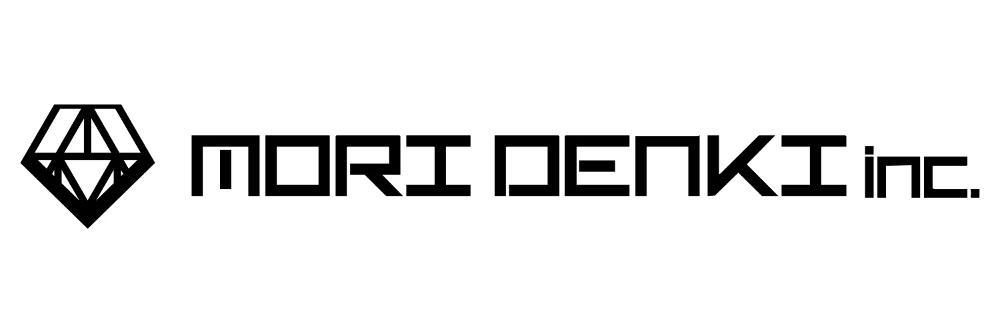
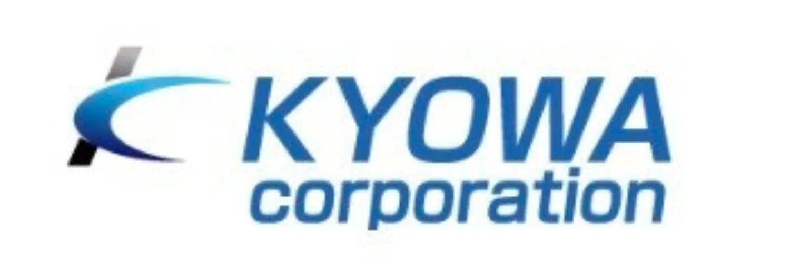
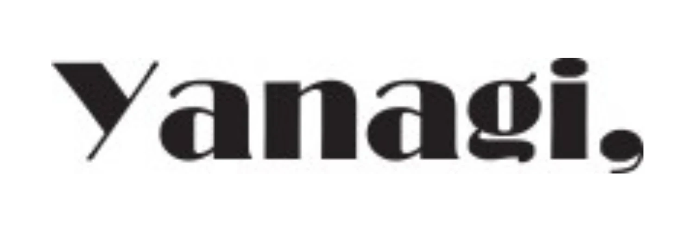
※ 掲載は順不同。第7回協賛企業様の一部をご紹介しています。
協賛・取材・運営に関するご質問は、お問い合わせフォームよりお寄せください。 最新情報は公式Instagramでも発信しています。